01
Colour theory
A colour wheel, a chart, visual memory and different hues of the same value.
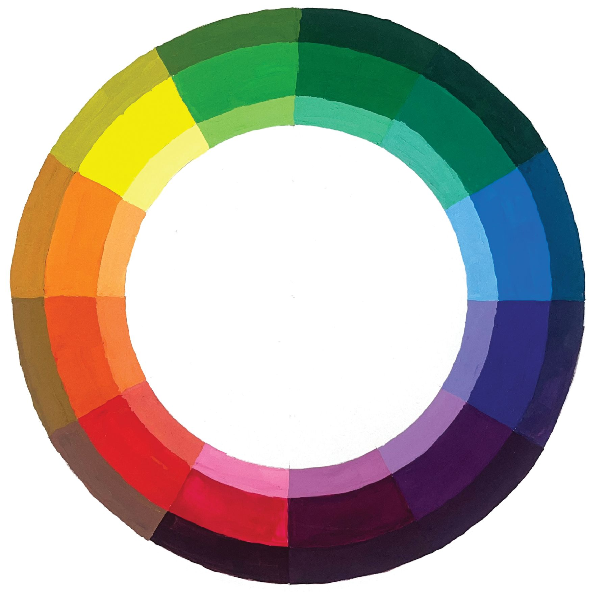
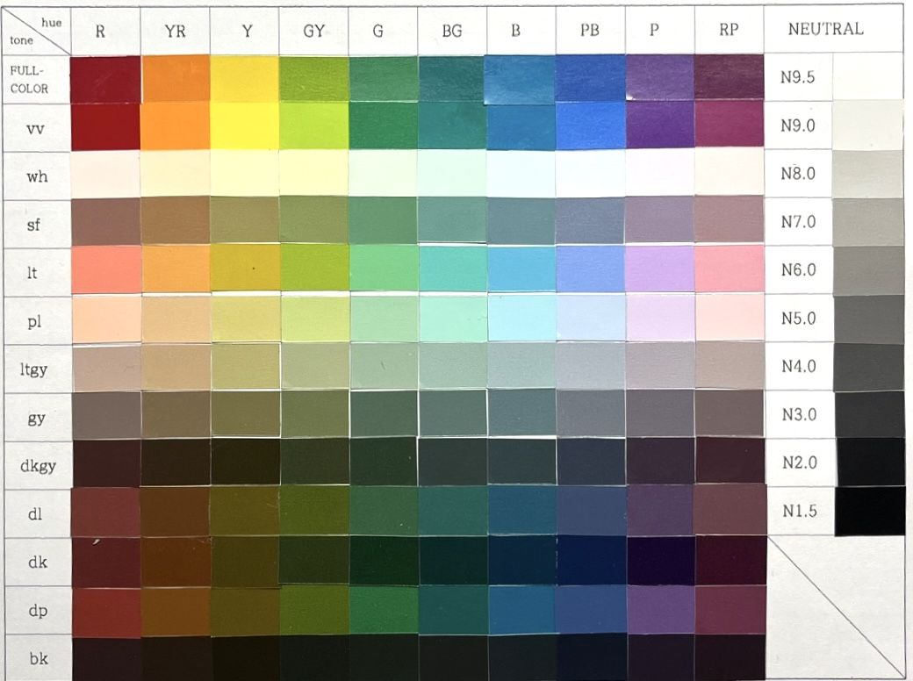
Theory, gouache and analysis
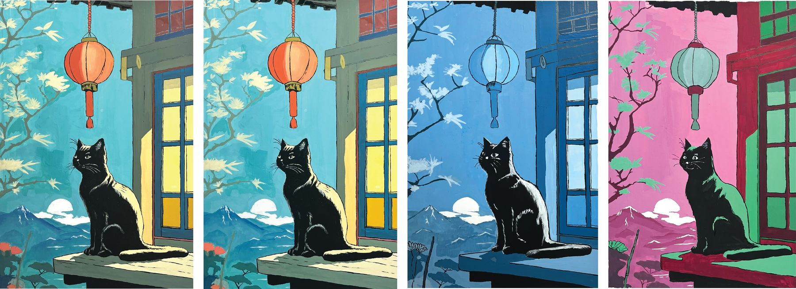
Overview
A semester of colour in gouache: theory, exercises, phenomena, interaction, harmony, and finally a colour analysis of a Kazakh painting applied to new work.
A colour wheel, a chart, visual memory and different hues of the same value.


Intervals, a colour cube and mixing grids.
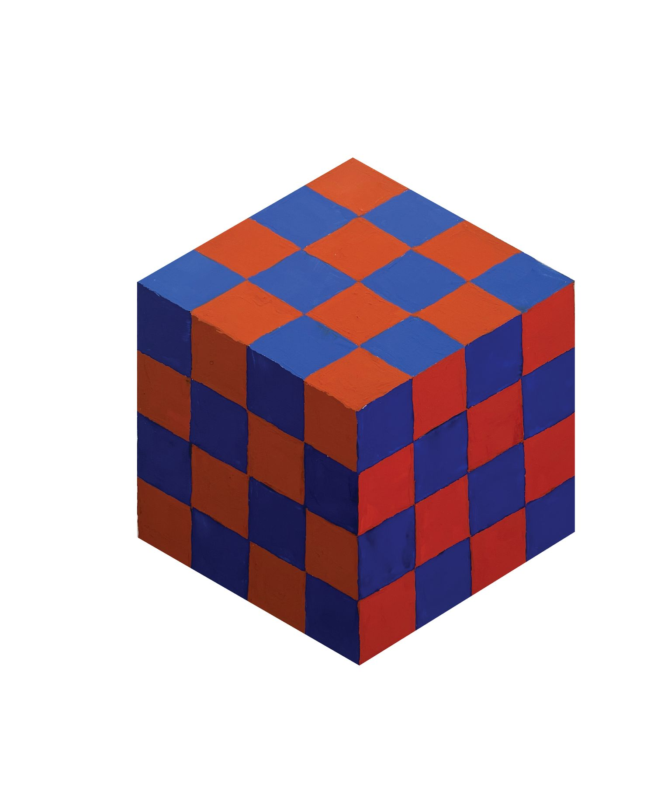
One painting, repainted in its original, complementary and monochrome palettes.


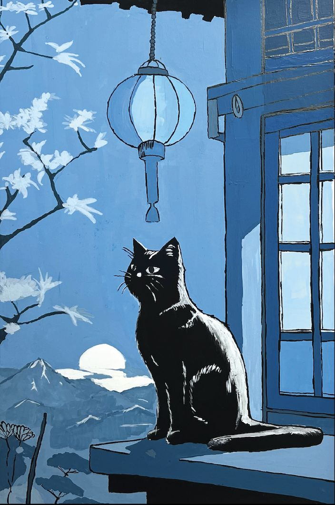
Vibration, the Bezold effect, spatial effect, transparency and vanishing boundaries.
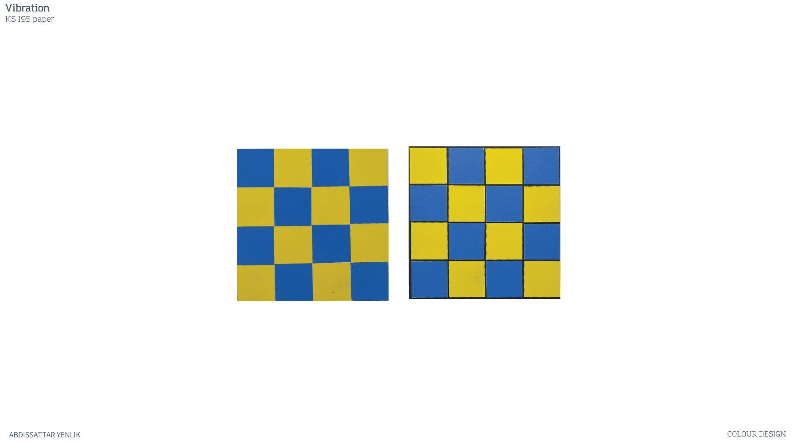
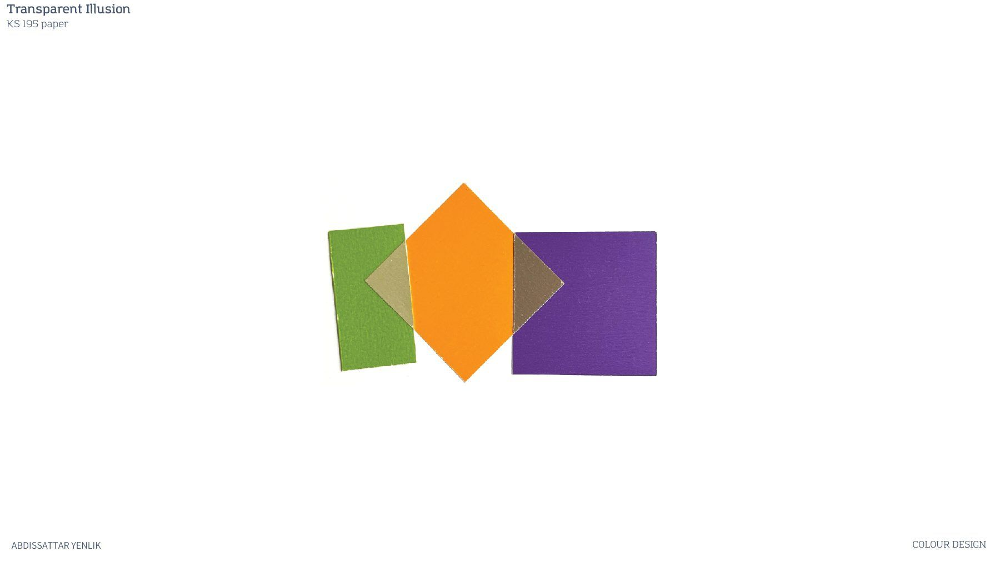
Ground subtraction, then order, tension and play, seasons and combinations.
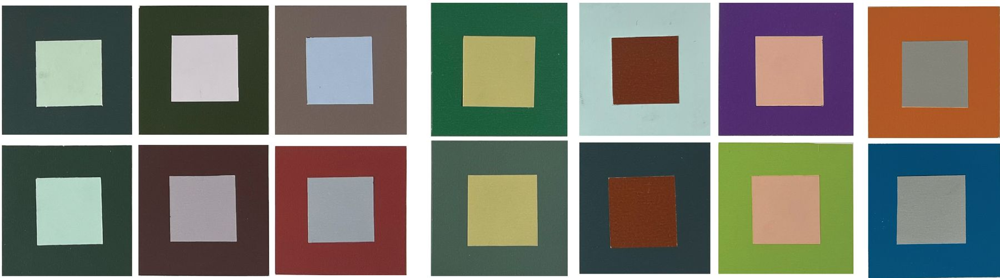

Colour psychology mapped, then the palette of a Kazakh painting applied to products.
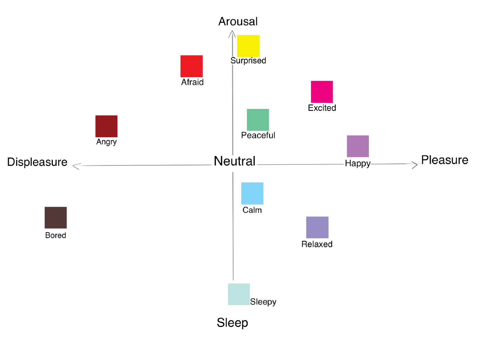
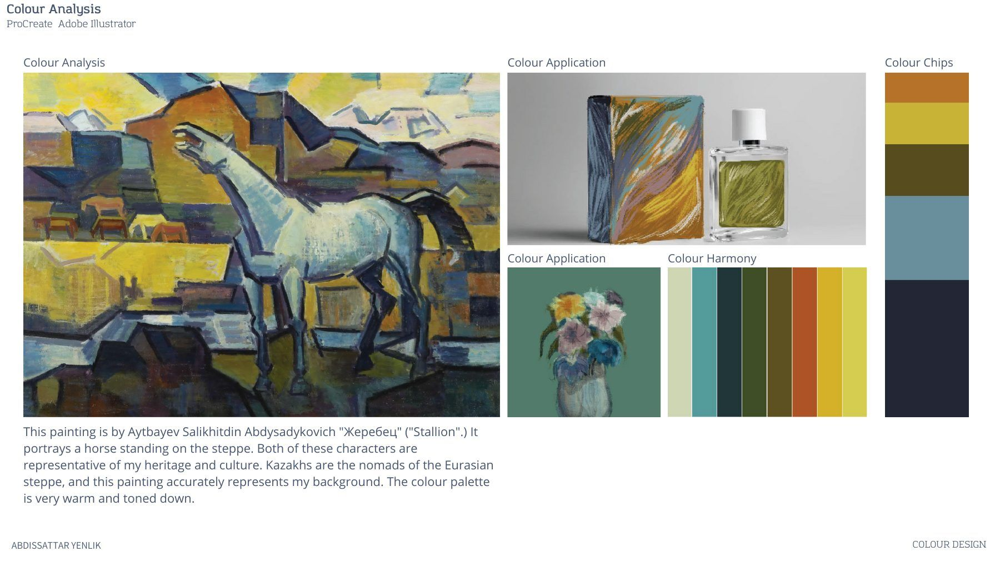
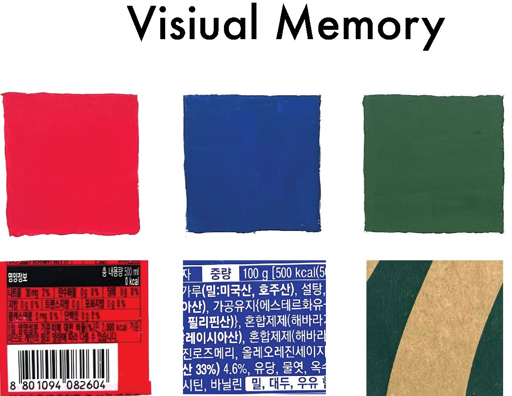
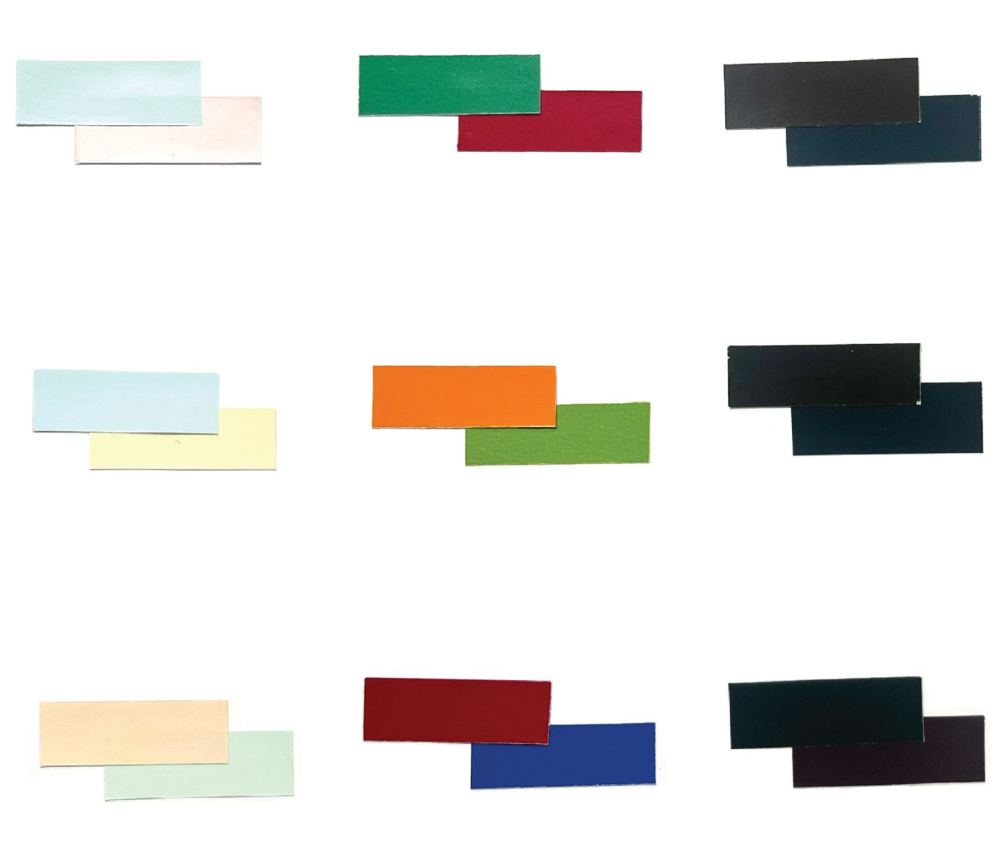


Next, 13
Drawing